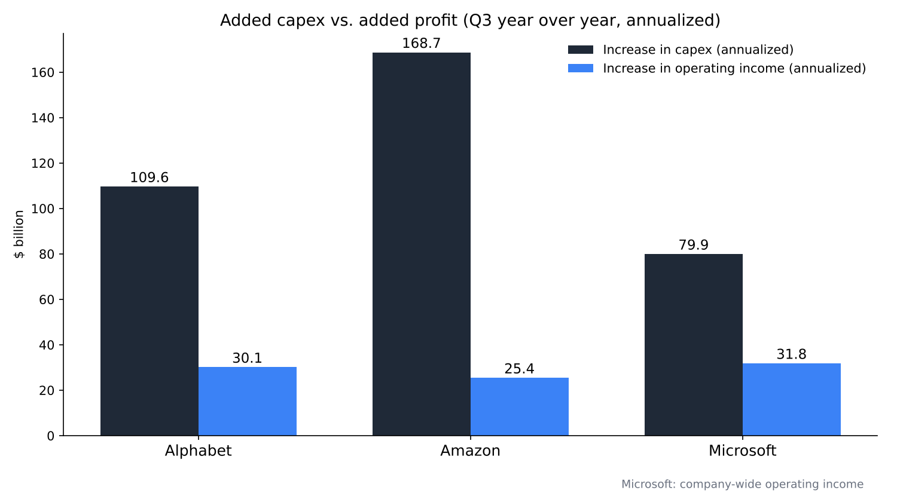
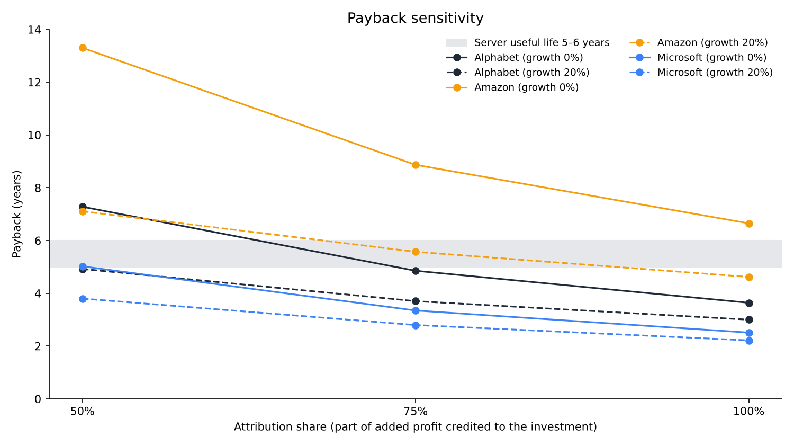

How many years will it take to recover AI capital spending? A payback estimate from Alphabet, Amazon and Microsoft in July–September
On October 28–29, 2026 (US time), three large US companies reported July–September results. Their combined capital spending for the quarter was about $168 billion, roughly 2.1 times the level a year earlier.
This article asks a single question: how many years would the increase in operating profit need to recover the increase in capital spending over the past year?
Writing from Japan, I test it with the three companies' earnings releases, an accounting-policy disclosure and a report from the International Energy Agency (IEA), using a sensitivity analysis that moves the profit attribution and growth rate.

Question and background
Capital spending (capex) is money spent to buy assets used over many years, such as land, buildings and servers. Accounting does not expense it at once; it spreads the cost over the years of use (useful life) as depreciation. The payback period is the number of years it takes for the profit an investment generates to recover the amount invested.
Alphabet's July–September capex was $51.36 billion, more than double the $23.95 billion a year earlier. Free cash flow, operating cash flow minus capex, was −$9.07 billion for the quarter [1]. Amazon's capex was $77.26 billion, and its trailing twelve-month free cash flow was −$42.36 billion. The company expects 2026 capex of about $220 billion and explains the increase as mainly investment in AI [2].
Microsoft's additions to property and equipment were $39.37 billion, about double the $19.39 billion a year earlier. Revenue from Azure, its cloud platform, grew 48% [3]. The market reaction was split: Alphabet fell 12.64% on the 29th, the day after its results, while Microsoft rose more than 4% after hours [7]. Amazon fell more than 5% after hours [8].
Useful life is essential to thinking about payback. From January 2025, Amazon shortened the useful life of a subset of its servers and networking equipment from six years to five. The reason it gave was the fast pace of technology, especially in AI and machine learning [4]. The machines used for AI computing are expensed on the assumption that they are replaced in five to six years.

Data and method
The numbers come from the three companies' releases, for July–September and the same quarter a year earlier [1][2][3]. For capex I use "purchases of property and equipment" in each cash flow statement. For profit I use segment operating income: Google Cloud for Alphabet and AWS for Amazon.
Microsoft recast its segments from fiscal 2027 and does not show operating income for cloud alone. I therefore use company-wide operating income. Company-wide profit includes growth outside the cloud, so Microsoft's payback comes out shorter. I keep this as a premise when reading the results.
The calculation is as follows.
Annualized increase in capex ΔC = (this quarter's capex − capex a year earlier) × 4
Annualized increase in profit ΔP = (this quarter's operating income − operating income a year earlier) × 4 × attribution share s
The payback is the number of years until cumulative profit reaches ΔC, with profit of ΔP in year one, ΔP × (1 + g) in year two, and so on. Fractions are prorated. The attribution share s is the part of the added profit produced by the added capex, and g is the annual growth rate of the added profit. The base case is s = 100% and g = 0%, where the payback equals ΔC ÷ ΔP. Taxes are not considered.
Results
| Company | Capex (year earlier → now) | Segment operating income (year earlier → now) | ΔC (annualized) | ΔP (annualized) | Payback (base) |
|---|---|---|---|---|---|
| Alphabet | $23.95B → $51.36B | $3.59B → $11.12B (Google Cloud) | $109.6B | $30.1B | 3.6 years |
| Amazon | $35.10B → $77.26B | $11.43B → $17.77B (AWS) | $168.7B | $25.4B | 6.7 years |
| Microsoft | $19.39B → $39.37B | $37.96B → $45.92B (company-wide) | $79.9B | $31.8B | 2.5 years |
Under the base assumptions, the payback works out to 3.6 years for Alphabet, 6.6 years for Amazon and 2.5 years for Microsoft. Only Amazon exceeds the five-to-six-year useful life of servers. Its capex rose the most, and AWS profit growth has not kept up.

Alphabet's Google Cloud operating income rose about 3.1 times in a year. Revenue more than doubled from $15.16 billion to $30.71 billion [1]. Profit rising almost as fast as capex is what produces the short 3.6 years.
Sensitivity analysis
The base case treats all added profit as the result of added capex and assumes profit grows no further. I therefore moved the attribution share s to 100%, 75% and 50%, and the growth rate g to 0%, 20% and 40%.
| Attribution s | Growth g | Alphabet | Amazon | Microsoft |
|---|---|---|---|---|
| 100% | 0% | 3.6 yrs | 6.7 yrs | 2.5 yrs |
| 100% | 20% | 3.0 yrs | 4.6 yrs | 2.2 yrs |
| 100% | 40% | 2.6 yrs | 3.8 yrs | 2.1 yrs |
| 75% | 0% | 4.9 yrs | 8.9 yrs | 3.3 yrs |
| 75% | 20% | 3.7 yrs | 5.6 yrs | 2.8 yrs |
| 75% | 40% | 3.2 yrs | 4.5 yrs | 2.5 yrs |
| 50% | 0% | 7.3 yrs | 13.3 yrs | 5.0 yrs |
| 50% | 20% | 4.9 yrs | 7.1 yrs | 3.8 yrs |
| 50% | 40% | 4.0 yrs | 5.4 yrs | 3.2 yrs |

Microsoft stays within five years in all nine cases. Alphabet exceeds six years in one case: 7.3 years with 50% attribution and no growth. Amazon takes 13.3 years with 50% attribution and no growth. Even at 75% attribution it takes 5.6 years with 20% growth and 4.5 years with 40%, and only then falls below five years.
Amazon's payback depends on whether AWS profit keeps growing at 20–40% a year from here. For Alphabet and Microsoft, the payback fits within the useful life even if profit growth stops, as long as most of the added profit is the result of the investment.
Discussion
There are two opposing views. The first is that this estimate makes the payback too long. Capex also includes assets such as land and buildings used for 15 to 25 years. Microsoft was reported to have extended the useful life of its data center buildings from 15 years to 25 from fiscal 2027 [6]. Newly built capacity has not yet produced profit, and its profit is still to come. Alphabet's cloud backlog was reported at $513.9 billion at the end of June [9].
The second is that, conversely, the estimate makes the payback too short. The added profit includes demand growth unrelated to AI. In addition, depreciation on this quarter's large capex has not yet fully reached expenses. Alphabet's depreciation rose 49%, from $5.61 billion to $8.37 billion, while its capex rose 114% [1]. That gap works to push future operating income down.
Electricity is also a constraint. The IEA expects global data center electricity consumption to roughly double to about 945 terawatt-hours by 2030 [5]. Servers generate no profit without the electricity and the space to run them. If power supply lags, payback lags by the same amount.
The data also have large limits. Segment operating income is not AI profit alone. For Microsoft I used company-wide profit. Annualizing by multiplying the quarter by four includes seasonal movement. Microsoft was reported to have said it will shift data center leases from finance leases, counted in capex, to operating leases, which are not, so the published capex figure itself may come out smaller [6].
The test is the figures for the next two to four quarters. For Amazon, watch the ratio of the year-over-year increase in AWS operating income to the year-over-year increase in capex. It is about 0.15 this quarter, and above 0.2 the base payback drops below five years. For Alphabet, I will revisit the conclusion if depreciation growth starts to exceed Google Cloud profit growth.
Conclusion
Estimated from July–September figures, the payback on added capex is 3.6 years for Alphabet, 6.6 years for Amazon and 2.5 years for Microsoft. Microsoft's figure is generous because it uses company-wide profit. For Alphabet and Microsoft, most cases stay within the server useful life even under stricter assumptions. For Amazon, the condition for payback is AWS profit continuing to grow 20% or more a year.
Share prices on the 29th did not match this ranking. Alphabet, with the shorter payback, fell 12.64%. Perhaps what the market looked at was free cash flow turning negative, more than the length of the payback.
How I see it
I own 350 shares of Alphabet. On the morning after the 12% drop, I neither sold nor added, because I had decided this week not to add after seeing earnings. Cash in my account is only 0.76%, and I think now is a time to build up cash reserves. I do not own Amazon. I think it is a good company, but I see it on the side that uses AI, not the side that builds it.
I do not own chip companies either. I think chips are in surplus and that what runs chips is electricity. That is why, among foreign stocks, I hold 1,250 shares of SpaceX as a company that can supply power and place together. If electricity runs short as the IEA outlook suggests, perhaps what decides the speed of payback will be how much can be run, more than how much was bought.
Sources
- Alphabet Inc., "Alphabet Announces Third Quarter 2026 Results," October 28, 2026 https://s206.q4cdn.com/479360582/files/doc_financials/2026/q3/2026q3-alphabet-earnings-release.pdf
- Amazon.com, Inc., "Amazon.com Announces Third Quarter Results," October 29, 2026 https://s2.q4cdn.com/299287126/files/doc_earnings/2026/q3/earnings-result/AMZN-Q3-2026-Earnings-Release.pdf
- Microsoft Corporation, "FY27 Q1 Earnings Release," October 29, 2026 https://www.microsoft.com/en-us/investor/earnings/fy-2027-q1/press-release-webcast
- Amazon.com, Inc., "Form 10-K (fiscal year ended December 31, 2024)," February 2025 https://www.sec.gov/Archives/edgar/data/1018724/000101872425000004/
- International Energy Agency, "Energy and AI," April 2025 https://www.iea.org/reports/energy-and-ai
- PYMNTS, "Microsoft Extends Data Center Lifespans to Soften AI Buildout Costs," July 2026 (news) https://www.pymnts.com/?p=4019068
- Yahoo! News Japan, US stock market article, October 30, 2026 (news) https://news.yahoo.co.jp/articles/e0440f2ac7956725edd40eee8a0dfa80a45af726
- OANDA Securities, "NY market summary (29th)," October 30, 2026 (news) https://www.oanda.jp/lab-education/market_news/mn_1041435_202610300813/
- Tickzen, "Alphabet Q3 2026 earnings preview," October 24, 2026 (news) https://tickzen.app/insights/alphabet-goog-q3-2026-earnings
Photos: İsmail Enes Ayhan, Taylor Vick (Unsplash). Charts by YUKI CAPITAL
I record my daily numbers and decisions on X.